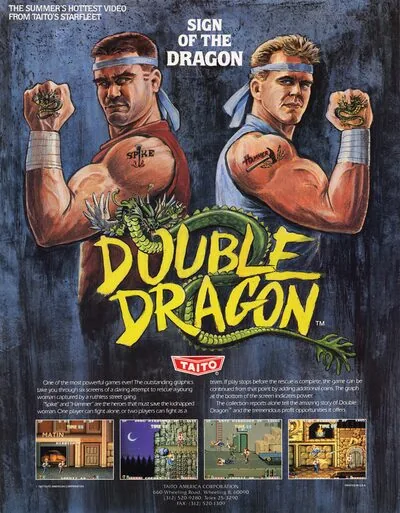

FBA (FinalBurn Alpha)
Double Dragon
- Año: 1987
- Desarrollador: Technos Japan
- Género: Lucha / 2.5D
- Jugadores: 2 jugadores
Double Dragon es un beat 'em up de desplazamiento lateral para uno o dos jugadores, protagonizado por los gemelos y maestros de artes marciales Billy y Jimmy Lee. Los hermanos deben derrotar a la salvaje banda callejera de los «Black Warriors» para rescatar a Marian, la novia secuestrada de Billy. Entre ellos y Marian hay cuatro niveles enormes, coloridos y variados, llenos de todo tipo de matones.
Muchos enemigos llevan armas (cuchillos, bates de béisbol, etc.), y si Billy o Jimmy consiguen quitárselas de las manos, pueden recogerlas y usarlas contra ellos.
Los Black Warriors son seis tipos de enemigos, más Willy, el jefe final, cada uno con su aspecto y su forma de luchar: * Williams: un macarra con camiseta de tirantes. Además de los puñetazos y patadas en salto normales, su golpe característico es un puñetazo al estómago. También usa armas como bates, cuchillos y cartuchos de dinamita. * Rowper: un macarra con pantalones y chaleco sin camisa a juego. Usa las mismas armas que Williams, pero además levanta y lanza objetos pesados como bidones, cajas y piedras. * Linda: una macarra que suele llevar un látigo. No es muy fuerte: cae al suelo con un par de puñetazos o una sola patada (por eso es el único enemigo de tamaño normal al que no se puede hacer una llave de cabeza). * Abobo: un tipo calvo, alto y muy musculoso. Ataca con puñetazos, una patada de pie y un lanzamiento. También levanta y lanza objetos pesados como Rowper. Por su tamaño, no se le puede hacer una llave de cabeza. * Jefe 1: el primer jefe, Abobo con otra cabeza, cresta y barba al estilo Mr. T. Pelea igual que Abobo, pero añade una bofetada a dos manos. A diferencia de Abobo, no usa armas. Una versión verde suya es el jefe de la misión 3. * Jefe 2: el segundo jefe, el jugador con otra cabeza, que usa casi todas sus técnicas. * Willy: el jefe final, armado, de forma algo injusta, con una ametralladora.
Double Dragon tuvo un éxito enorme por las muchas novedades que aportó al género, y guarda su último golpe genial para el final: si los dos jugadores siguen vivos tras derrotar al jefe final, tienen que pelear ENTRE ELLOS. El ganador se queda con el corazón de Marian.
Controles
Tres botones, todos en la fila de abajo.
| Panel | Juego |
|---|---|
 | Dar una patada |
 | Saltar |
 | Dar un puñetazo · coger armas |
  | Empezar |
 | Meter una moneda |
+  | Salir del juego |
El panel en FBA (FinalBurn Alpha)

Longplay

Partida completa de la recreativa (29 min), de AL82 Retrogaming Longplays: Double Dragon Longplay (Arcade) [60 FPS].